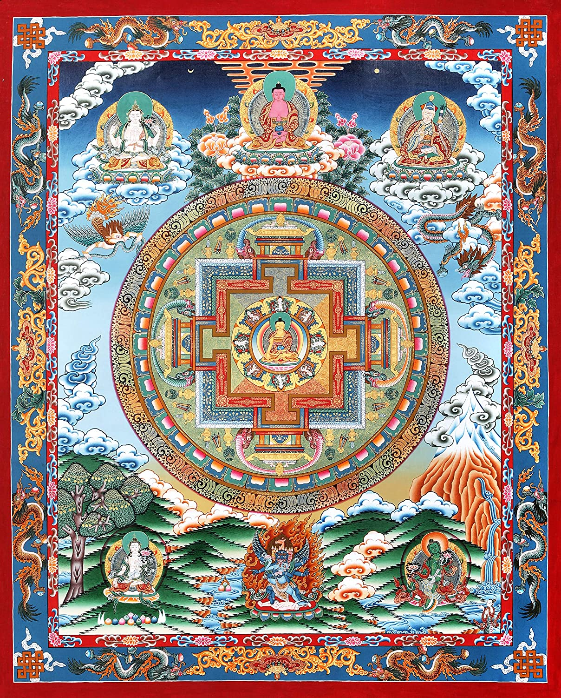
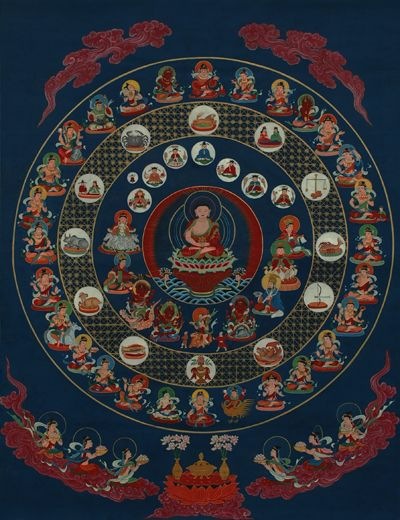

Los Mandalas representan el simbolismo mágico del universo en la construcción “del eterno círculo” de la rueda de la vida. Generalizada en la mayoría de las religiones, coloca al Creador en la cumbre, la Divinidad: los griegos, egipcios, navajos y monjes budistas tibetanos han construido Mandalas, que representa la ilusión de la vida terrenal y, en algunos casos, la filosofía kármica. Incluso el cristianismo ha contribuido a un magnífico Mandala en las ventanas de vidrio y ventanas de iglesias y catedrales de rosa (el más famoso es el rosetón norte de la catedral de Chartres en Francia).
|  |  |
|---|
Con mosaicos también están decoradas las mezquitas musulmanas. El Mandala, que en el conocimiento humano es universalidad, aparece continuamente en sus edificios, rituales y formas de arte. La reintroducción del concepto de mandala en el contexto cultural de los pueblos occidentales, redescubrió a través de Carl G. Jung, lo vio como un símbolo clave de la tradición alquímica occidental, colocándola como una forma de arte integrador con valor terapéutico, en el proceso de individuación de sus pacientes.
Los Mandalas son mágicas imágenes antiguas, maravillosas herramientas visuales simbólicos para la meditación, para llevar prosperidad y auspiciar suerte. Y además son esencialmente vehículos para la concentración de la mente, que tiene la oportunidad de liberarse de sus cadenas habituales. Su alto valor terapéutico radica precisamente en el proyecto sus propios complejos mentales en la red cósmica del Mandala, exorcizando así su propia mente que se deshace de todas sus obsesiones.
El significado de cada mandala dependerá precisamente de las formas y colores que cada individuo utiliza para realizarlos. Una manera de poder ahondar en nuetro yo interior aflrorando las emociones hacia el exterior, liberando todo lo negativo que podamos tener guardado al dejar en libertad la mente concentrandonos en el mandala. Los significados que guardan las principales formas de los mandalas son los siguientes:
Nos acerca a los símbolos de la tierra, el agua y el fuego y la forma del cuerpo humano.
Esencia de lo femenino. Renovación de la vida.
Naturaleza que fluye. Fuerza de la vida.
Esta forma tiene como significado ‘el equilibrio y la conexión de los contrarios'.
Si en un mandala aparece la forma de la mariposa, ésta se relacionará con la transformación, la muerte y la autorenovación del alma.
Significa ‘lejanía’, pero también tiene que ver con la ‘seguridad, lo absoluto y el verdadero yo'.
Se relaciona especialmente con el equilibrio y la estabilidad.
Su significado está relacionado con el agua (hacia abajo), la transformación (hacia arriba) y la vitalidad.
Vida terrenal. Estabilidad.Rendimiento del intelecto.
Esta forma tiene que ver con la vitalidad, las ‘energías curativas’.
Símbolo tanto de vida como de muerte y está relacionado muy estrechamente con los 4 puntos cardinales.
Su significado tiene que ver con ‘la unión, el amor y la felicidad’.Sentido positivo de la vida. Asociado al amor hacia los otros.
Es el símbolo de la vida, de la energía, del calor.
Fuerza superior por sobre de nosotros. El significado de esta forma está asociado con la libertad y la espiritualidad.
muy común en los mandalas, significa ‘la confusión, la autorreflexión y la búsqueda del centro de uno mismo.